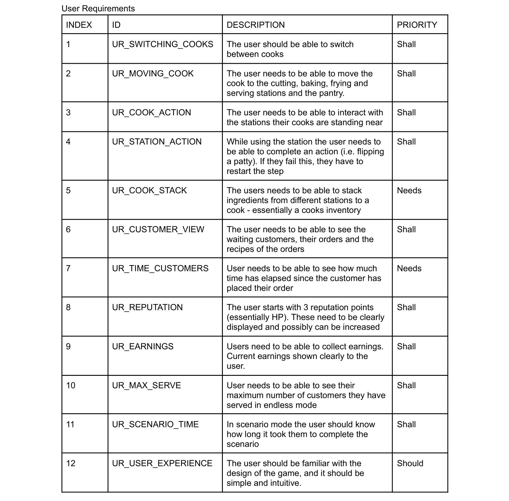
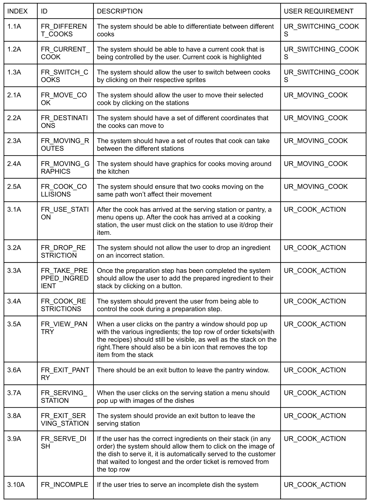
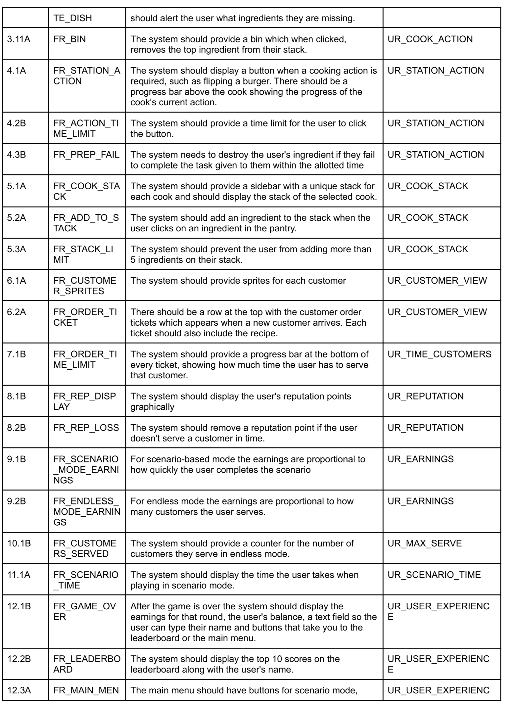
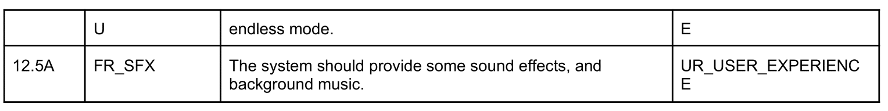
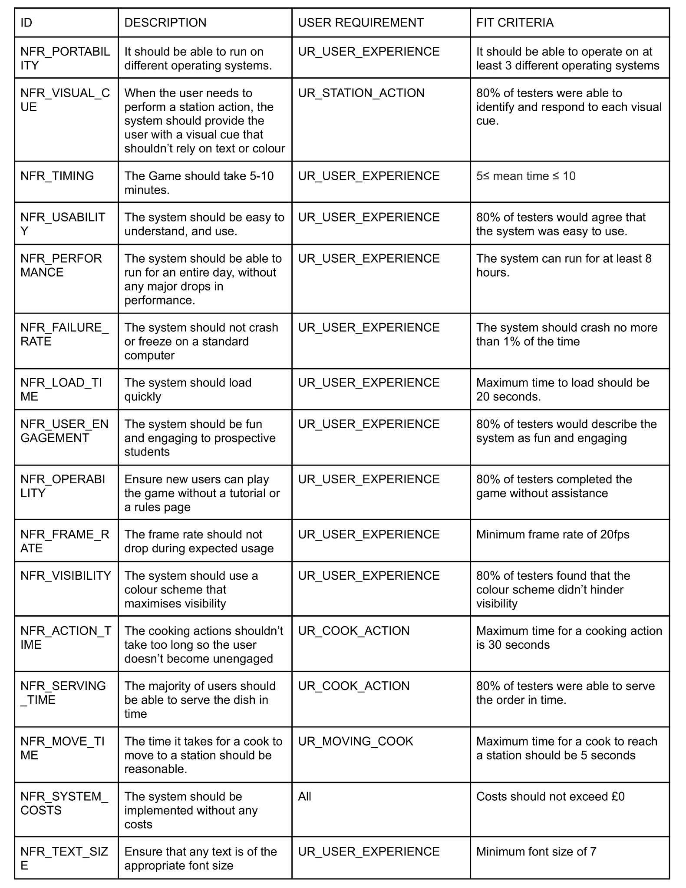
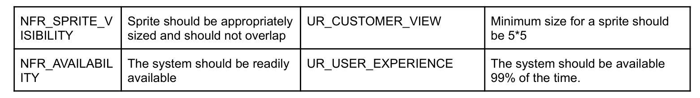

Requirements
The requirements PDF for assessment one
User Requirements
A visual representation of our user requirements can be found here

Functional System Requirements
A visual representation of our functional system requirements can be found here Note, in index, A means assessment 1, B means assessment 2.
 
Non-Functional System Requirements
A visual representation of our non-functional system requirements can be found here  